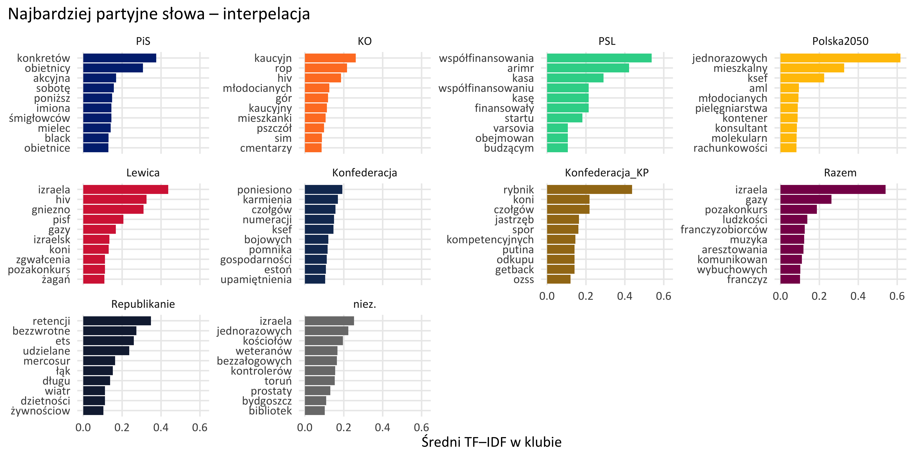
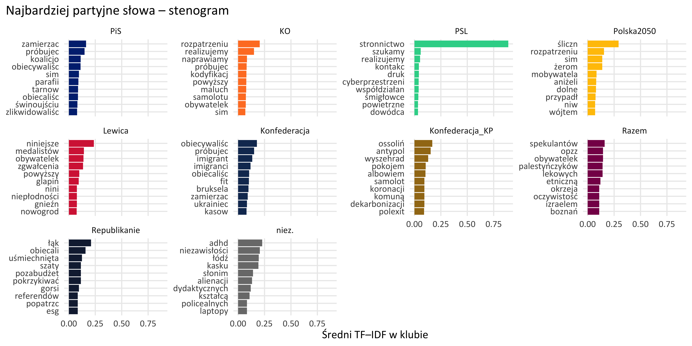
Snapshot wniosków (inline):
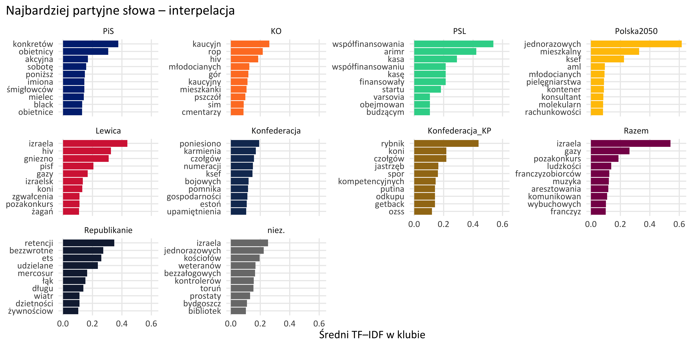
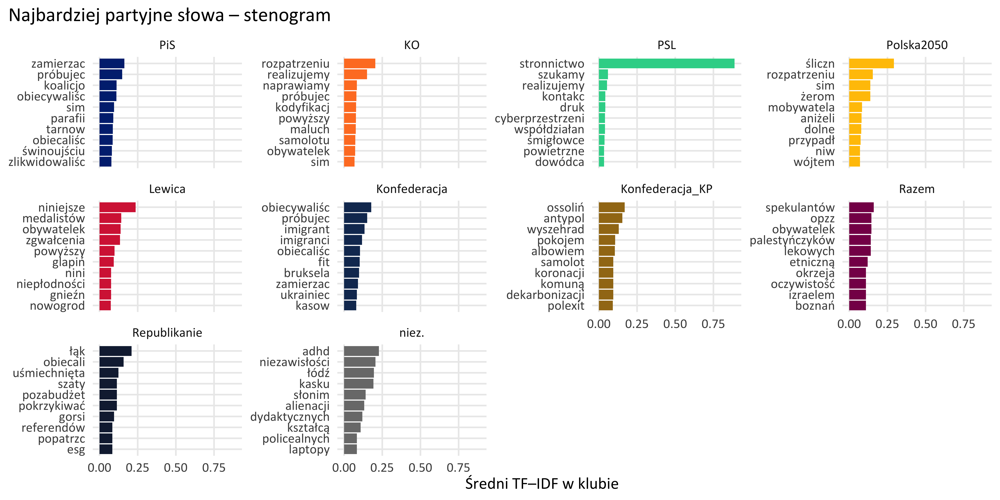
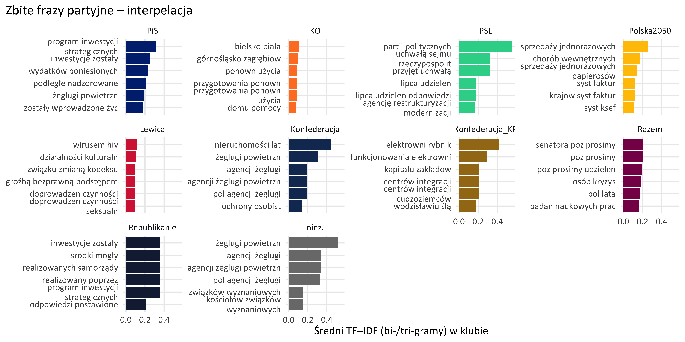


Kto jest najbardziej „na minusie”?
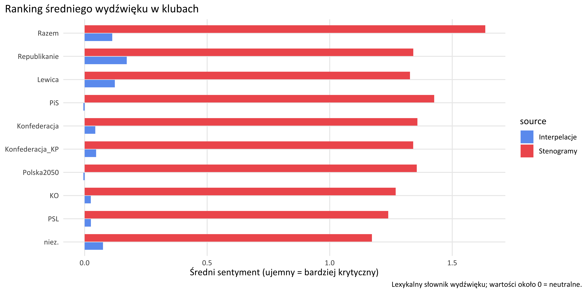
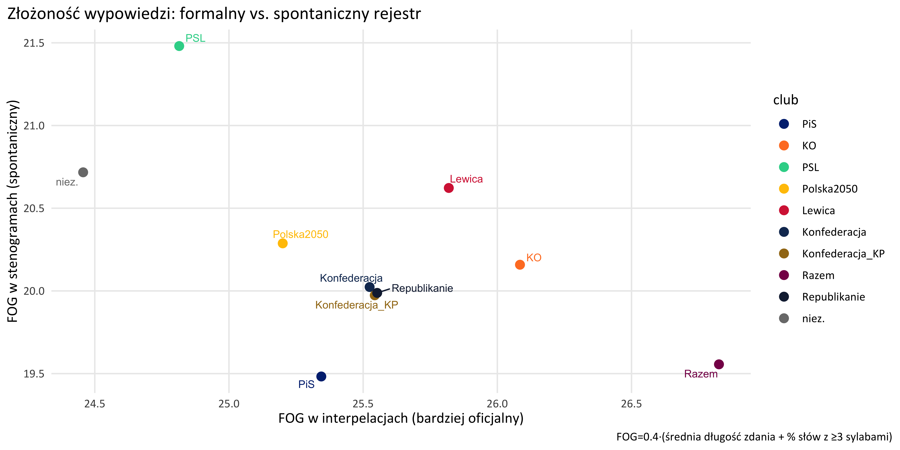
Ranking mediany FOG (posortowany)

Czy prostszy język idzie w parze z większym sentymentem?
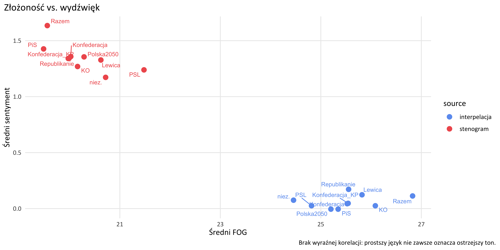

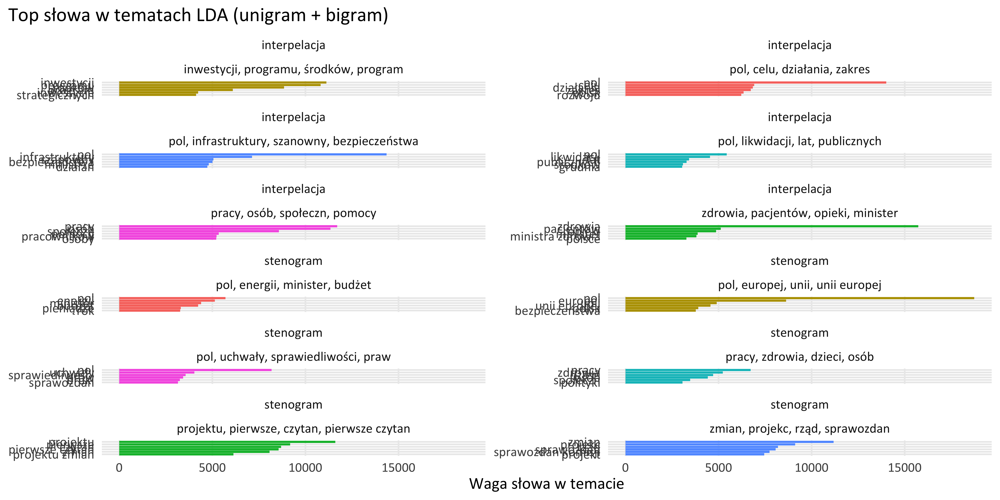

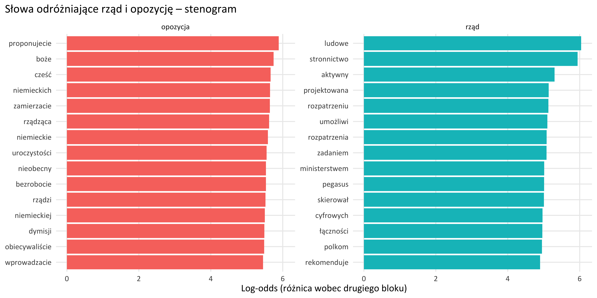
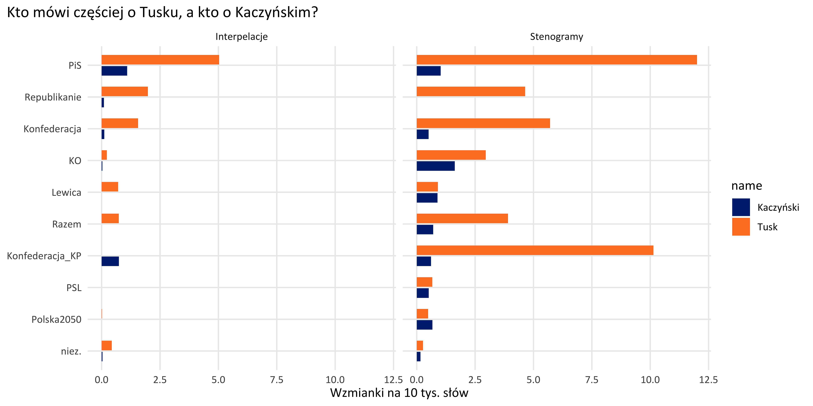
---
title: "Profil lingwistyczny klubów – 26.01.2026"
format:
html:
toc: true
number-sections: true
mainfont: Calibri
monofont: "Andale Mono"
code-fold: true
code-tools: true
html-table-processing: none
execute:
echo: false
warning: false
message: false
---
```{r setup}
library(tidyverse)
library(scales)
library(ggtext)
library(ggrepel)
knitr::opts_chunk$set(
fig.width = 10,
fig.align = "center",
dpi = 320,
out.width = "100%"
)
# minimalist replacements for tidytext::reorder_within / scale_y_reordered
reorder_within <- function(x, by, within, fun = mean, sep = "___") {
new_x <- paste(x, within, sep = sep)
stats::reorder(new_x, by, FUN = fun)
}
scale_y_reordered <- function(..., sep = "___", labels_wrap = NULL) {
base_lab <- function(x) gsub(paste0(sep, ".*$"), "", x)
lab_fun <- if (is.null(labels_wrap)) base_lab else function(x) stringr::str_wrap(base_lab(x), labels_wrap)
scale_y_discrete(labels = lab_fun, ...)
}
club_colors <- c(
"PiS" = "#012B7F",
"KO" = "#FF7F2A",
"PSL" = "#30D397",
"Polska2050" = "#FFC302",
"Lewica" = "#D62943",
"Konfederacja" = "#153560",
"Konfederacja_KP" = "#A27819",
"Razem" = "#870E57",
"Republikanie" = "#15233F",
"niez." = "#7A7A7A"
)
club_order <- names(club_colors)
theme_set(
theme_minimal(base_family = "Calibri", base_size = 12) +
theme(
plot.title.position = "plot",
plot.caption.position = "plot",
panel.grid.minor = element_blank(),
legend.position = "right"
)
)
```
## Dane wejściowe
```{r data}
tfidf <- read_csv("data/processed/tfidf_top_terms.csv")
tfidf_ng <- read_csv("data/processed/tfidf_top_ngrams.csv")
styles <- read_csv("data/processed/style_metrics.csv")
dumbbell <- read_csv("data/processed/sentiment_dumbbell.csv")
topics_mix <- read_csv("data/processed/lda_topic_mix.csv")
topics <- read_csv("data/processed/lda_topics.csv")
topic_lbl <- read_csv("data/processed/lda_topic_labels.csv")
log_odds <- read_csv("data/processed/comparison_log_odds.csv")
name_cnt <- read_csv("data/processed/name_counts.csv")
tfidf <- tfidf |> mutate(club = factor(group, levels = club_order))
tfidf_ng <- tfidf_ng |> mutate(club = factor(group, levels = club_order))
styles <- styles |> mutate(club = factor(club, levels = club_order))
dumbbell <- dumbbell |> mutate(club = factor(club, levels = club_order))
topics_mix <- topics_mix |> mutate(club = factor(club, levels = club_order),
topic = factor(topic))
topics <- topics |> mutate(topic = factor(topic))
topic_lbl <- topic_lbl |> mutate(topic = factor(topic))
delta_top <- dumbbell |> arrange(desc(delta)) |> slice(1)
fog_gap <- styles |> select(club, source, fog_mean) |>
pivot_wider(names_from = source, values_from = fog_mean) |>
mutate(delta = stenogram - interpelacja) |>
arrange(delta) |> slice(1)
```
**Snapshot wniosków (inline):**
- Największy wzrost negatywności między interpelacjami a wystąpieniami ma klub *`r delta_top$club`* (`r scales::number(delta_top$delta, accuracy = 0.01)` punktu sentymentu).
- Najbardziej „uprościli" język na mównicy posłowie *`r fog_gap$club`* (FOG ↓ o `r scales::number(-fog_gap$delta, accuracy = 0.01)` względem interpelacji).
## 1. Słowa charakterystyczne (TF–IDF)
```{r tfidf_plots}
plot_tfidf <- function(src_label) {
tfidf |>
filter(source == src_label) |>
group_by(club) |>
slice_max(score, n = 10, with_ties = FALSE) |>
ungroup() |>
mutate(term = reorder_within(term, score, club)) |>
ggplot(aes(score, term, fill = club)) +
geom_col() +
facet_wrap(~club, scales = "free_y") +
scale_y_reordered() +
scale_fill_manual(values = club_colors, guide = "none") +
labs(
x = "Średni TF–IDF w klubie",
y = NULL,
title = paste("Najbardziej partyjne słowa –", src_label)
)
}
plot_tfidf("interpelacja")
plot_tfidf("stenogram")
## 1a. Najmocniejsze bi- i trigrama
```{r tfidf_ngrams}
plot_ng <- function(src_label) {
tfidf_ng |>
filter(source == src_label) |>
group_by(club) |>
slice_max(score, n = 6, with_ties = FALSE) |>
ungroup() |>
mutate(term_wrap = stringr::str_wrap(term, 26),
term = reorder_within(term_wrap, score, club)) |>
ggplot(aes(score, term, fill = club)) +
geom_col() +
facet_wrap(~club, scales = "free_y") +
scale_y_reordered(labels_wrap = 26) +
scale_fill_manual(values = club_colors, guide = "none") +
labs(
x = "Średni TF–IDF (bi-/tri-gramy) w klubie",
y = NULL,
title = paste("Zbite frazy partyjne –", src_label)
)
}
plot_ng("interpelacja")
plot_ng("stenogram")
```
## 2. Sentyment: pismo vs. mowa (dumbbell)
```{r dumbell}
db_df <- dumbbell |>
pivot_longer(cols = c(interpelacja, stenogram), names_to = "source", values_to = "sent") |>
mutate(source = recode(source, interpelacja = "Interpelacje", stenogram = "Stenogramy"))
ggplot(db_df, aes(sent, club, color = source)) +
geom_line(aes(group = club), color = "grey70", linewidth = 0.8) +
geom_point(size = 3) +
scale_color_manual(values = c("Interpelacje" = "#6c9ef0", "Stenogramy" = "#f05c5c")) +
labs(
x = "Średni sentyment (lexykalny, wyższy = bardziej pozytywny)",
y = NULL,
title = "Zmiana wydźwięku: formalne pisma vs. wystąpienia na sali"
)
```
**Kto jest najbardziej „na minusie”?**
```{r sentiment-ranking}
styles |>
select(club, source, sentiment_mean) |>
mutate(source = recode(source, interpelacja = "Interpelacje", stenogram = "Stenogramy")) |>
ggplot(aes(sentiment_mean, fct_reorder(club, sentiment_mean), fill = source)) +
geom_col(position = position_dodge(width = 0.7), width = 0.65) +
scale_fill_manual(values = c("Interpelacje" = "#6c9ef0", "Stenogramy" = "#f05c5c")) +
labs(
x = "Średni sentyment (ujemny = bardziej krytyczny)",
y = NULL,
title = "Ranking średniego wydźwięku w klubach",
caption = "Lexykalny słownik wydźwięku; wartości około 0 = neutralne."
)
```
## 3. Złożoność języka (FOG) a kanał komunikacji
```{r fog}
fog_df <- styles |>
select(club, source, fog_mean) |>
pivot_wider(names_from = source, values_from = fog_mean) |>
mutate(diff = stenogram - interpelacja)
ggplot(fog_df, aes(interpelacja, stenogram, label = club, color = club)) +
geom_abline(linetype = "dashed", color = "grey60") +
geom_point(size = 3) +
geom_text_repel(size = 3, show.legend = FALSE) +
scale_color_manual(values = club_colors) +
labs(
x = "FOG w interpelacjach (bardziej oficjalny)",
y = "FOG w stenogramach (spontaniczny)",
title = "Złożoność wypowiedzi: formalny vs. spontaniczny rejestr",
caption = "FOG=0.4·(średnia długość zdania + % słów z ≥3 sylabami)"
)
```
**Ranking mediany FOG (posortowany)**
```{r fog-median}
styles |>
mutate(source = recode(source, interpelacja = "Interpelacje", stenogram = "Stenogramy")) |>
group_by(source) |>
mutate(club_ord = reorder_within(club, fog_median, source)) |>
ungroup() |>
ggplot(aes(fog_median, club_ord, fill = source)) +
geom_col(width = 0.7, position = position_dodge(width = 0.8)) +
scale_y_reordered() +
scale_fill_manual(values = c("Interpelacje" = "#6c9ef0", "Stenogramy" = "#f05c5c")) +
labs(
x = "Mediana FOG",
y = NULL,
title = "Kto mówi najprościej? (niższy FOG = prostszy język)"
)
```
**Czy prostszy język idzie w parze z większym sentymentem?**
```{r fog-sent}
styles |>
ggplot(aes(fog_mean, sentiment_mean, color = source, label = club)) +
geom_point(size = 3) +
geom_text_repel(show.legend = FALSE, size = 3) +
scale_color_manual(values = c(interpelacja = "#6c9ef0", stenogram = "#f05c5c")) +
labs(
x = "Średni FOG",
y = "Średni sentyment",
title = "Złożoność vs. wydźwięk",
caption = "Brak wyraźnej korelacji: prostszy język nie zawsze oznacza ostrzejszy ton."
)
```
## 4. Tematy LDA
### 4.1 Udział tematów w klubach (heatmapa)
```{r topic-heatmap}
topic_order <- topics_mix |>
group_by(source, topic) |>
summarise(mean_prop = mean(proportion), .groups = "drop") |>
arrange(source, desc(mean_prop)) |>
mutate(topic_ord = row_number())
topics_mix |>
left_join(topic_lbl, by = c("source", "topic")) |>
left_join(topic_order, by = c("source", "topic")) |>
mutate(
topic_lab = paste0(topic, ": ", str_trunc(label, 35)),
topic_lab = fct_reorder(topic_lab, -topic_ord)
) |>
ggplot(aes(topic_lab, club, fill = proportion)) +
geom_tile(color = "white") +
scale_fill_gradient(low = "#f7fbff", high = "#08306b", labels = percent_format(accuracy = 1), limits = c(0, NA)) +
facet_wrap(~source, ncol = 1) +
labs(
x = "Temat (LDA) – top 4 słów",
y = NULL,
fill = "Udział",
title = "Profil tematyczny klubów – udział tematów LDA"
) +
theme(axis.text.x = element_text(angle = 45, hjust = 1, vjust = 1))
```
### 4.2 Słowa definiujące tematy
```{r topic-terms}
topics |>
left_join(topic_lbl, by = c("source", "topic")) |>
group_by(source, topic, label) |>
slice_max(weight, n = 6) |>
ungroup() |>
mutate(term = reorder_within(term, weight, interaction(source, topic))) |>
ggplot(aes(weight, term, fill = topic)) +
geom_col(show.legend = FALSE) +
facet_wrap(source ~ label, scales = "free_y", ncol = 2) +
scale_y_reordered() +
labs(
x = "Waga słowa w temacie",
y = NULL,
title = "Top słowa w tematach LDA (unigram + bigram)"
)
```
## 5. Rząd vs. opozycja – słownictwo dystynktywne
```{r log-odds}
log_plot <- function(src_label) {
log_odds |>
filter(source == src_label) |>
group_by(group) |>
slice_max(log_odds, n = 15) |>
ungroup() |>
mutate(term = fct_reorder(term, log_odds)) |>
ggplot(aes(log_odds, term, fill = group)) +
geom_col(show.legend = FALSE) +
facet_wrap(~group, scales = "free_y") +
labs(
x = "Log-odds (różnica wobec drugiego bloku)",
y = NULL,
title = paste("Słowa odróżniające rząd i opozycję –", src_label)
)
}
log_plot("interpelacja")
log_plot("stenogram")
```
## 6. „Tusk” vs „Kaczyński”
```{r names}
name_long <- name_cnt |>
select(club, source, tusk_per10k, kaczynski_per10k) |>
pivot_longer(cols = c(tusk_per10k, kaczynski_per10k),
names_to = "name", values_to = "per10k") |>
mutate(
source = recode(source, interpelacja = "Interpelacje", stenogram = "Stenogramy"),
name = recode(name, tusk_per10k = "Tusk", kaczynski_per10k = "Kaczyński")
)
ggplot(name_long, aes(per10k, fct_reorder(club, per10k), fill = name)) +
geom_col(position = position_dodge(width = 0.7), width = 0.6) +
facet_wrap(~source) +
scale_fill_manual(values = c("Tusk" = "#FF7F2A", "Kaczyński" = "#012B7F")) +
labs(
x = "Wzmianki na 10 tys. słów",
y = NULL,
title = "Kto mówi częściej o Tusku, a kto o Kaczyńskim?"
)
```
## 6. Krótka interpretacja
- **Sentyment**: wszystkie kluby mówią na sali bardziej emocjonalnie niż piszą. Największy skok (ponad punkt) notuje *`r delta_top$club`*, co sugeruje ostrzejszą retorykę w debacie plenarnej.
- **Styl**: indeks FOG jest niższy w stenogramach (mniej urzędowego żargonu, krótsze zdania), zwłaszcza u *`r fog_gap$club`*.
- **Tematyka**: heatmapa pokazuje, że tematy 1–3 w stenogramach są mocniej „rozsmarowane” (większa dyspersja), podczas gdy interpelacje mają wyraźniejsze profile (np. tematy 4–6 przypisane do KO/PSL).
- **Słownictwo blokowe**: w interpelacjach opozycja eksponuje nazwiska i kwestie personalne, podczas gdy rządowe kluby częściej używają języka proceduralnego i administracyjnego; w stenogramach kontrast wzmacnia się o nazwiska i formy adresatywne.